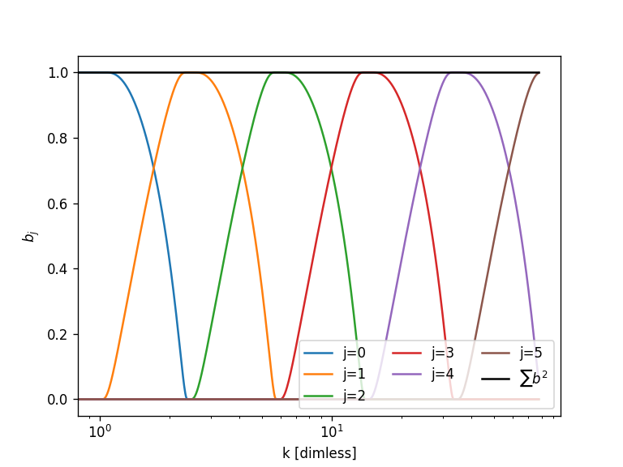
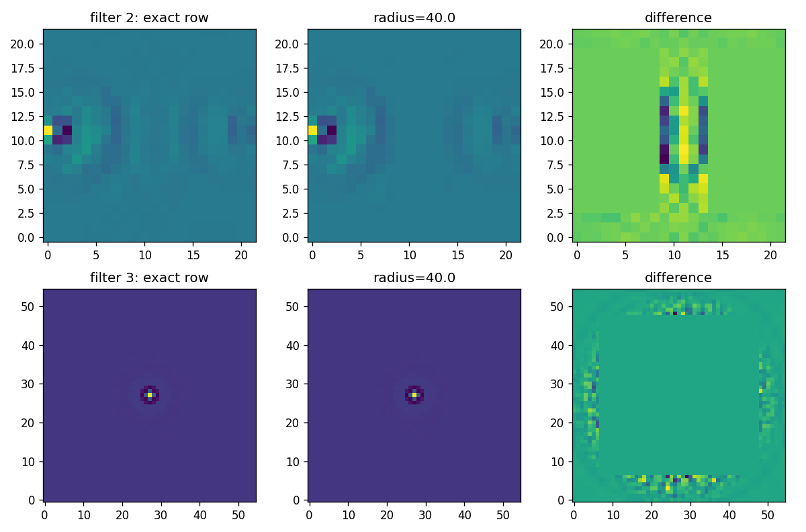
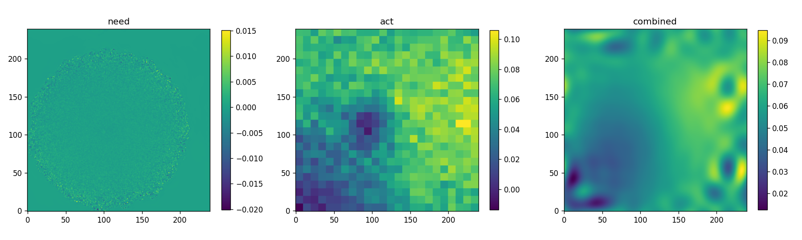

Last updated 2026-10-20. Branch needlet, master merged.
For each needlet band i the noise precision is computed on a downsampled lattice of pixels, Gi = KiT O Ki, with Ki the band-limited real-space response of a unit coefficient. O is PTN-1P for the M2 TODs and a map-space inverse covariance for ACT. The combined coefficients solve (GM2+GACT)c = KT(rhsM2+rhsACT) per band; the map is wav2map_real of the zero-filled coefficients. Cross-band blocks are neglected (design of the project).

Old: one full TOD pass (plus ~2*nfilt full FFTs) per lattice pixel, dense (npixred x npix) float32; the committed run stored ~87 GB.
New: impulses spaced further apart than a window of half width radius are probed together, so only ~(2*radius/downsamp)2 TOD passes per band are needed; single-band rfft transforms replace the full transforms; the result is a sparse symmetric matrix on the lattice. radius=None reproduces the exact matrix (tested against the original brute force transforms to 1e-6).
Benchmark (MOOJ1142, one TOD, 6″ pixels, 110×110 map, downsamps 22,11,5,2,1,1; examples/needlet_benchmark.py):
| filter | lattice pts | exact (s) | radius | time (s) | speed-up | max rel. error | nnz fraction |
|---|---|---|---|---|---|---|---|
| 2 | 484 | 7.9 | 10 | 0.46 | 17x | 3.8% | 5% |
| 2 | 484 | 7.9 | 20 | 1.9 | 4.1x | 1.0% | 17% |
| 3 | 3025 | 30.9 | 10 | 1.1 | 27x | 1.3% | 4% |
| 3 | 3025 | 30.9 | 20 | 6.8 | 4.6x | 0.5% | 15% |
| 3 | 3025 | 30.9 | 40 | 94.8 | 0.3x | 0.10% | 56% |
Radius 40 is slower than exact because the window covers most of the lattice and the Python extraction loop dominates; use radius=None there. Even the "exact" path is much faster than before (single-band FFTs, no per-pixel allocation). Errors are relative to the largest entry of the exact matrix.

Full-size example (twores_ex.py, 3″ pixels, 218×218, 2 TODs, 10 filters, ANA for scales > 60″, radius 30): M2 ANA 15 s, ACT 2 s, whole script ~1 min, versus an 87 GB dense cache before.

Left: PCG residual (M2 only, small scales, the part subtracted before the ANA step). Middle: ACT only, the inverse variance weighted coadd of the splits on the same pixels (ACT pixels are visible). Right: combined M2+ACT solution for the large scales (filters at > 60″). All in mJy/beam. The combined map follows the ACT large-scale gradient but shows ringing at the map edges, outside the M2 footprint where the solution is constrained only by the ACT precision; not yet investigated.
ACT maps (µKCMB) are converted to M2 units (mJy/beam, RJ) with act_conversion: thermodynamic to RJ temperature (matches witch.utils.K_CMB2K_RJ, 0.8146 at 90 GHz), then times the M2 beam solid angle. Defaults: 90 GHz, 9″ FWHM beam, giving 4.37e-4 mJy/beam per µK (override with --freq, --m2-beam, --act-conv). The ACT noise is the summed split ivar as a diagonal inverse covariance; TODO: replace with a robust map-space noise covariance estimate.
The map size is chosen as the even size within 15% above the minimum that has the most divisors (218 → 240 here) so filters can be downsampled more.
tests/test_needlet.py: band transforms vs full transforms, exact ANA vs brute force, probing accuracy, map response, solve round trip, colouring.